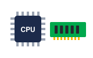
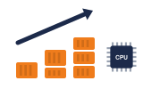
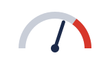
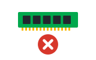
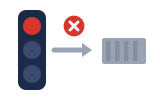
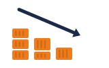
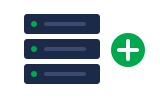

01Resources · ធនធានrequests
Each container asks for CPU and memory with requests.
កុងតឺន័រនីមួយៗ សុំ CPU និង memory តាមរយៈ requests។
Scaling និង health check · ផ្តល់ធនធានគ្រប់គ្រាន់ ពិនិត្យសុខភាព និងពង្រីកដោយខ្លួនឯង
ប្រាប់ Kubernetes ថាកម្មវិធីត្រូវការប៉ុន្មាន និងរបៀបដឹងថាវាសុខសប្បាយ នោះវានឹងពង្រីក និងជួសជុលដោយខ្លួនឯង។

Requestsសុំ CPU និង memory
Autoscalerបន្ថែម pod ស្វ័យប្រវត្តិតាមលំដាប់៖ CPU និង memory → probe → autoscaler → node បន្ថែម។
Space listen · ← → move · K show text
Each container asks for CPU and memory with requests.
កុងតឺន័រនីមួយៗ សុំ CPU និង memory តាមរយៈ requests។

Limits stop one container from using too much.
Limits ការពារកុំឲ្យកុងតឺន័រមួយ ប្រើច្រើនពេក។

If it goes over its memory limit, it gets OOMKilled.
បើវាប្រើលើស memory limit វានឹងត្រូវ OOMKilled។
A liveness probe checks if the app is still alive.
Liveness probe ពិនិត្យថា កម្មវិធីនៅរស់ឬអត់។
A readiness probe checks if it is ready for traffic.
Readiness probe ពិនិត្យថា វារួចរាល់ទទួលចរាចរណ៍ឬនៅ។

A pod that is not ready gets no traffic.
Pod ដែលមិនទាន់រួចរាល់ មិនទទួលចរាចរណ៍ទេ។
The Horizontal Pod Autoscaler adds pods when CPU is high.
Horizontal Pod Autoscaler បន្ថែម pod ពេល CPU ខ្ពស់។

When traffic drops, it removes them again.
ពេលចរាចរណ៍ធ្លាក់ចុះ វាដកពួកវាចេញវិញ។

The cluster autoscaler adds nodes when pods have no room.
Cluster autoscaler បន្ថែម node ពេល pod គ្មានកន្លែង។
Readiness for traffic, liveness for restarts. Most apps need both.
Readiness សម្រាប់ចរាចរណ៍ liveness សម្រាប់ restart។ កម្មវិធីភាគច្រើនត្រូវការទាំងពីរ។
Liveness តឹងពេក អាច restart កម្មវិធីដែលគ្រាន់តែយឺតបន្តិច។
It used more memory than its limit and was OOMKilled.
វាប្រើ memory លើស limit ហើយត្រូវ OOMKilled។
ដំឡើង memory limit ឬរកមើល memory leak ក្នុងកូដ។
It requests 256 megabytes, with a limit of 512.확인 필요 · checkcheck
វាសុំ 256 megabyte ហើយ limit គឺ 512។
When average CPU goes over seventy percent.확인 필요 · checkcheck
ពេល CPU ជាមធ្យមលើសចិតសិបភាគរយ។
Ten. After that, we need more nodes.확인 필요 · checkcheck
ដប់។ បើលើសនេះ យើងត្រូវការ node បន្ថែម។
Tap a word's play button to hear it. Hide one side, then recall it before you tap to check.
Each container asks for CPU and memory with requests. Limits stop one container from using too much. If it goes over its memory limit, it gets OOMKilled.
កុងតឺន័រនីមួយៗ សុំ CPU និង memory តាមរយៈ requests។ Limits ការពារកុំឲ្យកុងតឺន័រមួយ ប្រើច្រើនពេក។ បើវាប្រើលើស memory limit វានឹងត្រូវ OOMKilled។
A liveness probe checks if the app is still alive. A readiness probe checks if it is ready for traffic. A pod that is not ready gets no traffic.
Liveness probe ពិនិត្យថា កម្មវិធីនៅរស់ឬអត់។ Readiness probe ពិនិត្យថា វារួចរាល់ទទួលចរាចរណ៍ឬនៅ។ Pod ដែលមិនទាន់រួចរាល់ មិនទទួលចរាចរណ៍ទេ។
The Horizontal Pod Autoscaler adds pods when CPU is high. When traffic drops, it removes them again.
Horizontal Pod Autoscaler បន្ថែម pod ពេល CPU ខ្ពស់។ ពេលចរាចរណ៍ធ្លាក់ចុះ វាដកពួកវាចេញវិញ។
The cluster autoscaler adds nodes when pods have no room.
Cluster autoscaler បន្ថែម node ពេល pod គ្មានកន្លែង។
Q. Liveness or readiness, which one?
Q. Liveness ឬ readiness មួយណា?
A. Readiness for traffic, liveness for restarts. Most apps need both.
A. Readiness សម្រាប់ចរាចរណ៍ liveness សម្រាប់ restart។ កម្មវិធីភាគច្រើនត្រូវការទាំងពីរ។
Q. Why did my pod restart with exit code 137?
Q. ហេតុអ្វី pod របស់ខ្ញុំ restart ជាមួយ exit code 137?
A. It used more memory than its limit and was OOMKilled.
A. វាប្រើ memory លើស limit ហើយត្រូវ OOMKilled។
Q. How much memory does the API need?
Q. API ត្រូវការ memory ប៉ុន្មាន?
A. It requests 256 megabytes, with a limit of 512.
A. វាសុំ 256 megabyte ហើយ limit គឺ 512។
Q. When does it scale up?
Q. វាពង្រីកនៅពេលណា?
A. When average CPU goes over seventy percent.
A. ពេល CPU ជាមធ្យមលើសចិតសិបភាគរយ។
Q. What is the maximum number of pods?
Q. ចំនួន pod អតិបរមាគឺប៉ុន្មាន?
A. Ten. After that, we need more nodes.
A. ដប់។ បើលើសនេះ យើងត្រូវការ node បន្ថែម។
Can we look at the graphs together?
យើងអាចមើលក្រាហ្វជាមួយគ្នាបានទេ?
Let's raise the limit and watch it.
តោះដំឡើង limit ហើយតាមដានមើល។
Say it in your head first, then tap the box to check.